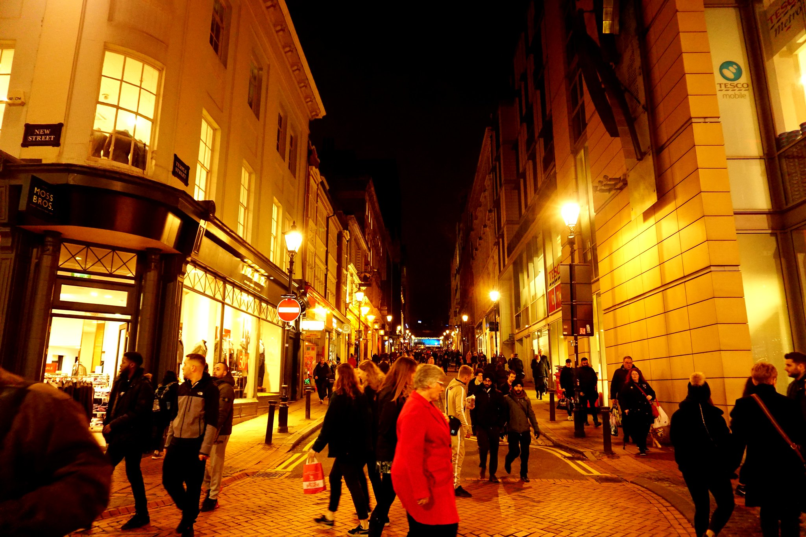

Dublín, capital de la República de Irlanda, se encuentra en la costa este de Irlanda en la desembocadura del río Liffey.
Sus edificios históricos incluyen el Castillo de Dublín, que data del siglo XIII, y la imponente Catedral de San Patricio, construida en 1191.